--------------------------------
SYSTEM NOTES
Subject survived the apocalypse.
Archive integrity: 100%
Recommendation:
Keep around for another year.
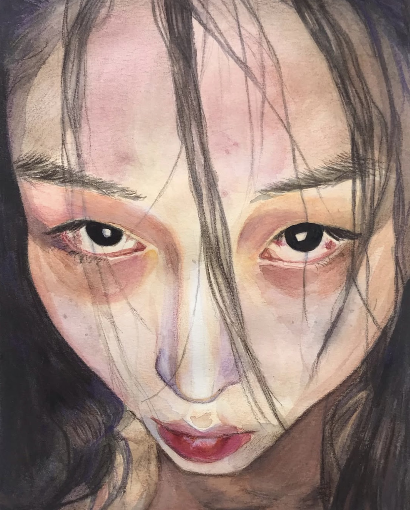
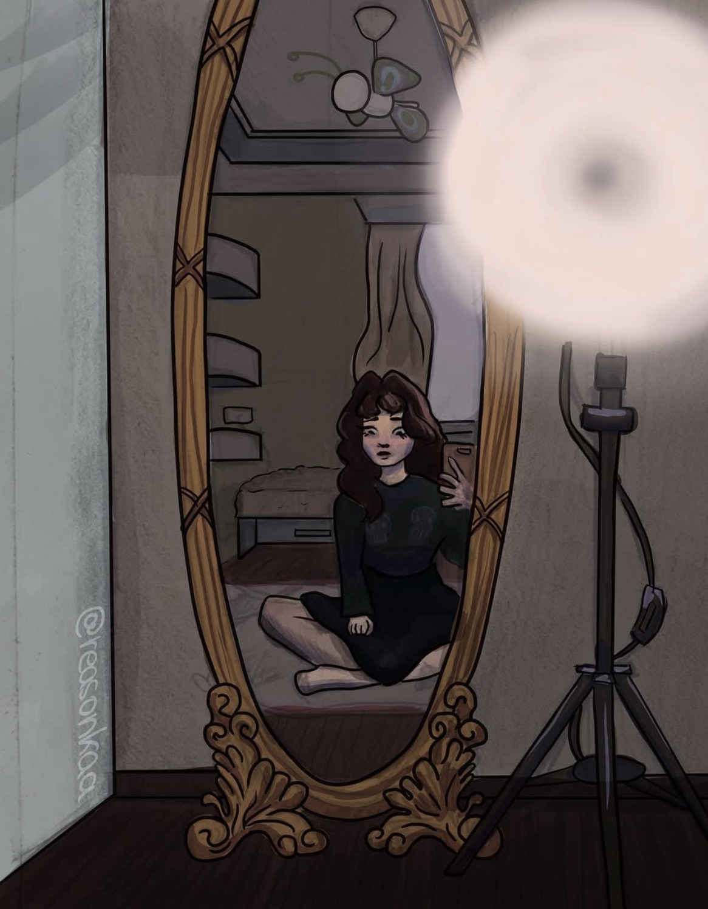
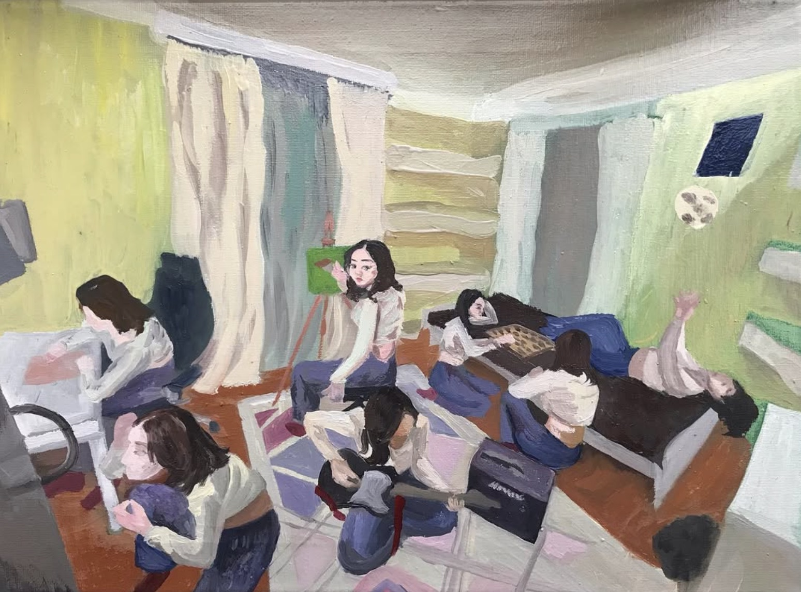
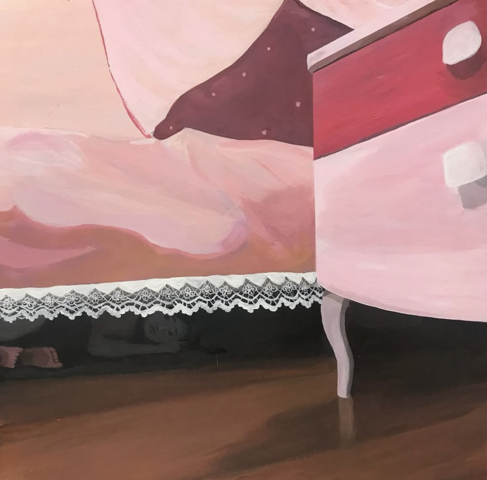
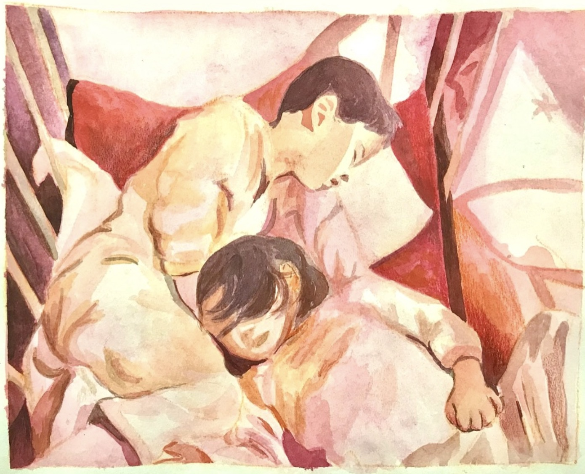
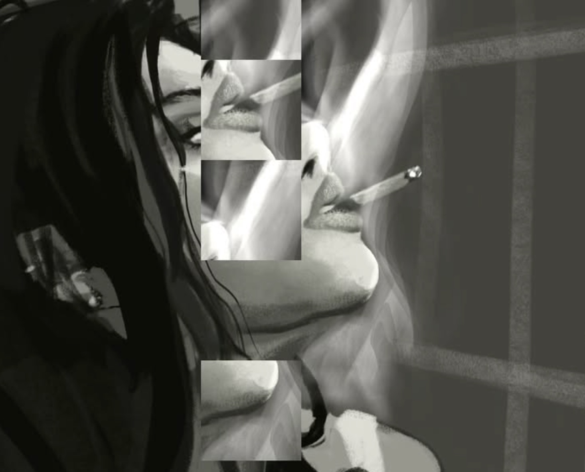
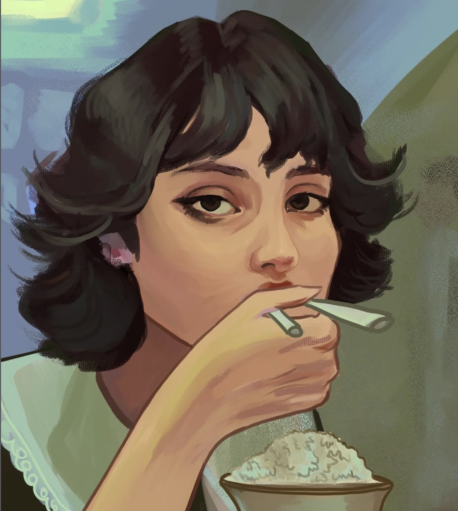
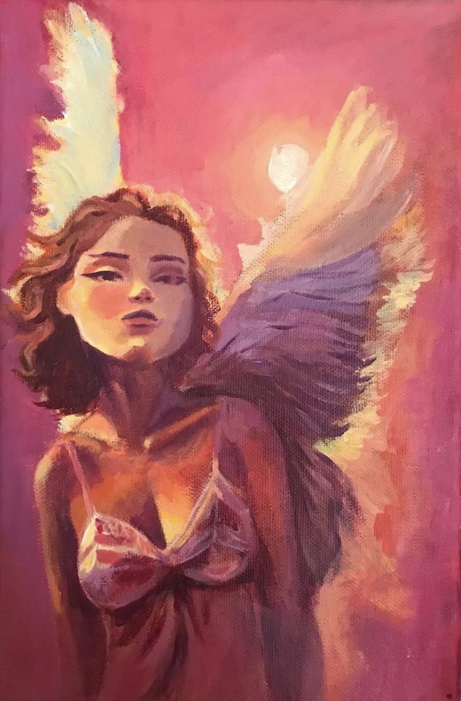
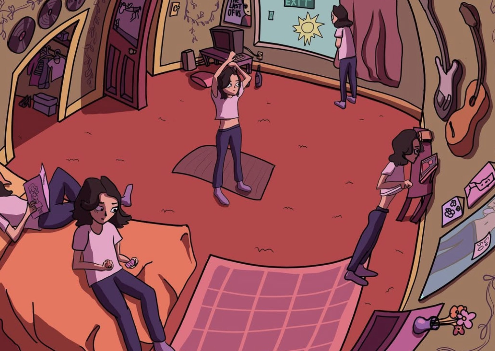
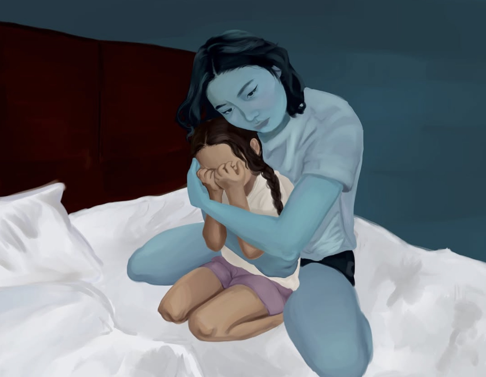
Decryption successful. 5 audio recordings recovered.
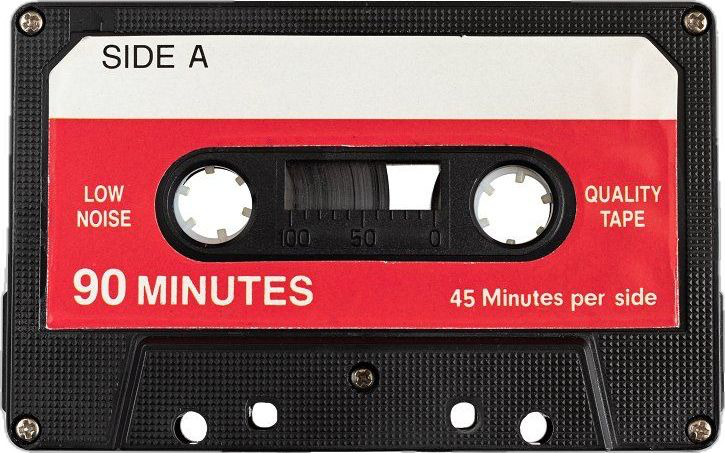
REC_001.mp3
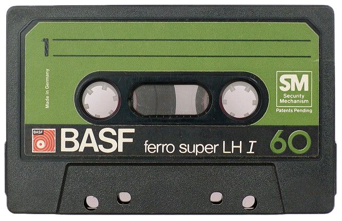
REC_002.mp3
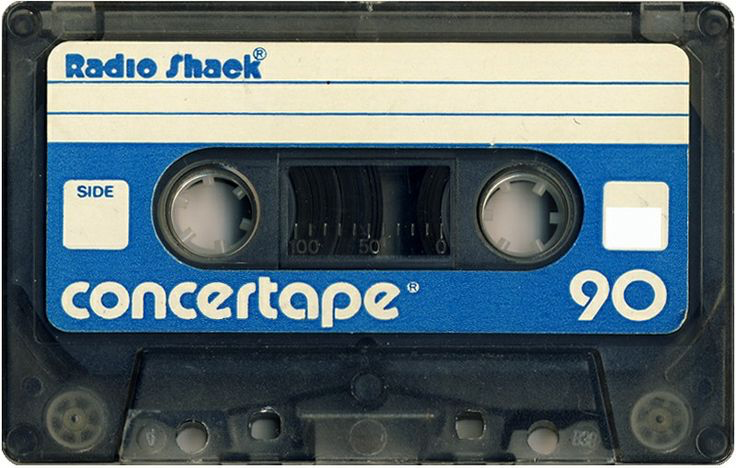
REC_003.mp3
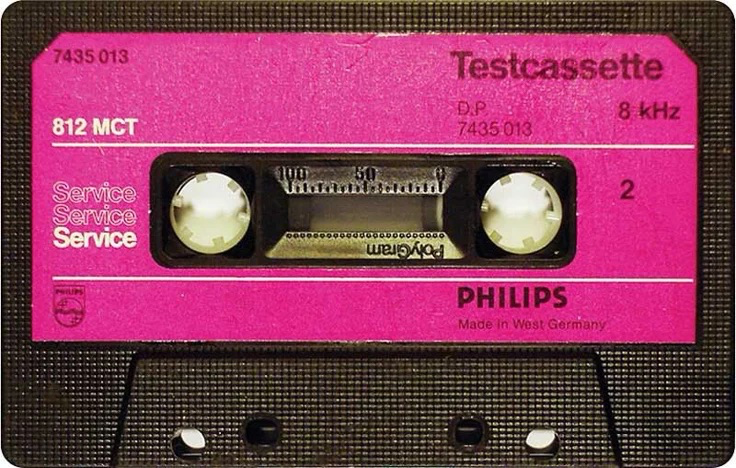
REC_004.mp3
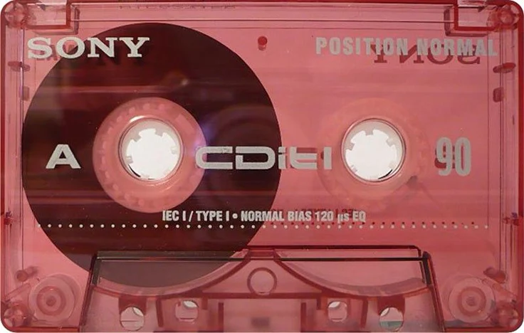
REC_005.mp3
RECOVERED MEMORY RECORDS: 10
We were supposed to study for an exam, but somehow ended up talking for six hours straight about everything except studying. I still remember laughing so hard my stomach hurt.